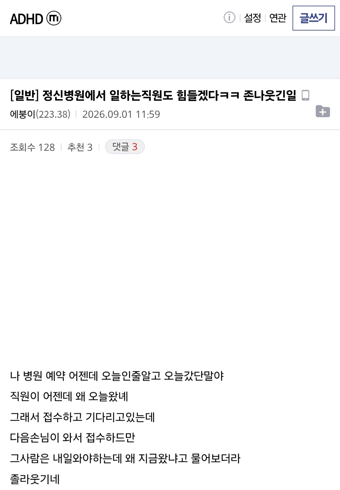

눈물겨운 ADHD갤럼의 존나 웃긴일
댓글
할려고했는데 간호사가 말걸어서 까먹고 이제집에가야지 하면서 까먹는 패턴임
나만 겪어본게 아니구나ㅋㅋㅋㅋㅋ
이건 오차범위가 상방 하방 꽤 넓을듯
전부 다 adhd로 넣으면 안돼
1. 아 나중에 보게 메모장에 적어놔야지
2. 그걸 안봄
3. 아 이젠 핸드폰 달력으로 해서 알람오게 해야지
4. 그걸 생각만하고 안함
빅스비 개꿀임
예전엔 전원버튼 꾹 누르거나 하이빅스비 했어야되는데 이제 걍 빅스비 오늘저녁 7시에 머머 챙기라고 리마인드해줘 하면 딱 알려줌.
사실 빅스비 외치는것도 쪽팔리긴한데 전원버튼을 음성녹음에 할당해서
쉽지않음
알림이 와도 뭔가에 꽂히면 그대로 실행하는거지
그게 되면 병원에 안갔지 ㅋㅋㅋ
알람 맞춰야하지 하고 다음날 맞출듯
그거 다 되면 병원 왜 가겠어
진지하게 이게 진짜임
메모장에 메모하는걸 까먹음
알림 설정하는걸 까먹음
ㄹㅇ임
그 한시간 안에 까먹음
adhd는 진짜 까먹는단 사실임 일부러가 아니라 진짜 까먹음
내가 치매가 아닌가? 싶어질 때가 많음
Adhd가 아닌 애들은 안 까먹는단 말야?
그럼 adhd가 0과 1처럼 딱 떨어지는거임?
따지는거 아님
나도 요즘 가끔 저래서 궁굼해서 묻는거
주의력결핍과잉행동장애한테 왜 주의력결핍행동하냐고 물으시면 어뜩해요
그냥 대부분의 사람들은 대충 살아
"좀이따 메모해야겠다"
그게 adhd야
지각했다고 너무 뭐라하지 말라고
이런 한마디 하고 싶은 글도 무댓 개드립에 가네
그래도 온게 어디냐.
나는 오후 6시 비행기인데 3시간 일찍가야지 3시까지 가야겟군
이렇게 외우다 당일에 3시간 일찍가야겠군 12시까지가야겟군
이지랄하고 12시에간적있음
전이든 후든 밤 12시에 가는 것보다 훨 낫다
@들은 이것만 기억해라
1. 기억해야 할 건 단 하나의 정보 보관소에만 저장
2. 분류 생각하지 말고 일단 메모해서 때려박기
3. 하루 1-2번 정도 루틴을 정해서 메모 내용 정리, 검토
난 회사면접보고 최종합격해서 기숙사들어가는날을 착각해서 일주일빨리간적도있음
나도 adhd 약하게있는데 짧게 짧게 생기는건 안까먹음 그래서 아침마다 리셋되는 출근하기 약속은 지각 절대 안함 ㅋㅋ 근데 긴 기간동안 뭐 회사에서 교육 이수하라고하는 그런거 자꾸 까먹음
가까이보면 비극 멀리서보면 희극
멀리서 보면 희극이니깐 낄낄 거리겠는데
가까이서 보면 처참하드라
메모한다거나 뭔가 물어보고 기억하려는 시늉은 하는데 그 할일들이 정해졌음에도
동선 정리나 타이밍계산 같은게 아니라 그렇게 일이 쌓여있음에도 존나 정신없게 여기저기 일 손대고 벌려놓기만함 ㅅㅂㅋㅋㅋㅋ이걸 3년보니깐 장애인새낀가 진짜 라는 생각까지듬
아니, 예약 잡을때 핸드폰 달력에다가 써 놓으면 친절하게 1시간 전 알림도 가능한데 왜 그러는거야?